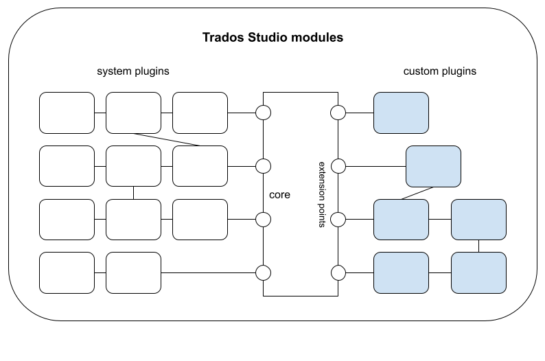

Trados Studio Integration API
Welcome to the Trados Studio Integration API. This API provides access to Trados Studio application functionality.
Trados Studio Integration API
The Trados Studio Integration API enables third-party developers to add or customize new functionalities in Studio applications and more specific to Trados Studio application (for more information see: What you can do with the Integration API).
The main topics of the Trados Studio Integration API are:
Trados Studio's architecture is modular, being based on components called plug-ins, set up both at the system level (for the built-in features) and as extensions provided by the community and installed by end users. Here is a small diagram illustrating this approach:

We recommend reading the following topics before you start using Trados Studio Integration API: